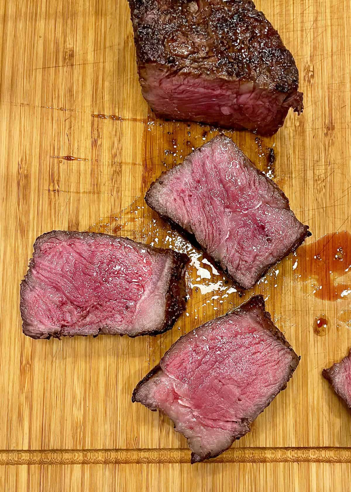

Reverse Sear Ribeye Recipe
Ingredients
- Ribeye steak
- Salt & Pepper
- Butter
Directions
- Preheat oven to 300
- Dry steaks with paper towel
- Season steaks to your preference
- Put steaks in oven on a rack with foil trap beneath
- Preheat to high an oiled cast iron skillet on stovetop
- Allow steaks to reach desired internal temp (130 suggested)
- Remove steaks from oven and place onto cast iron
- Add desired amount of butter
- Sear all sides for 1 minute each while bathing in melted butter
- Remove, rest, enjoy!